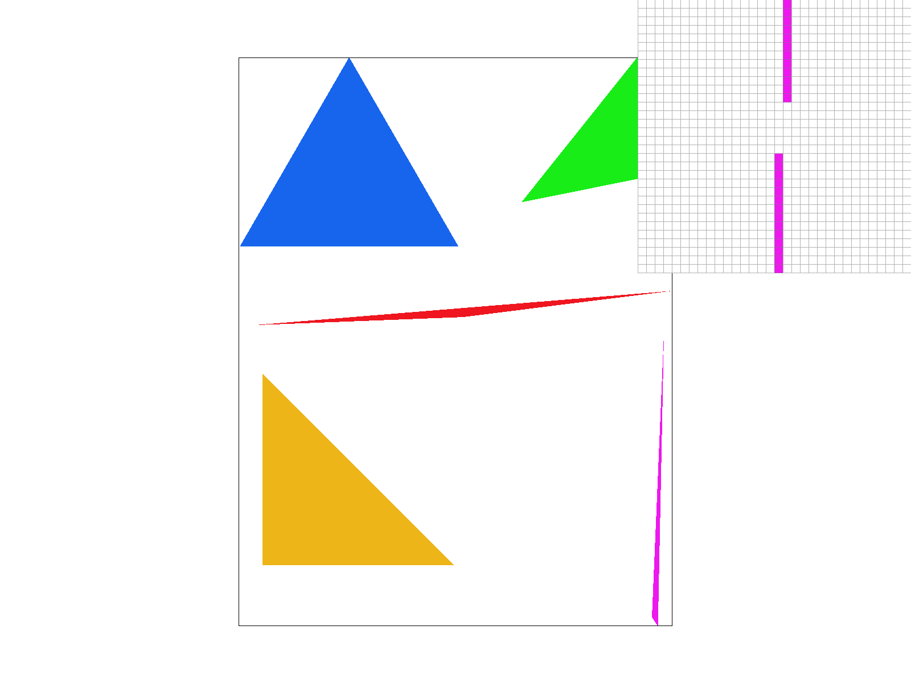
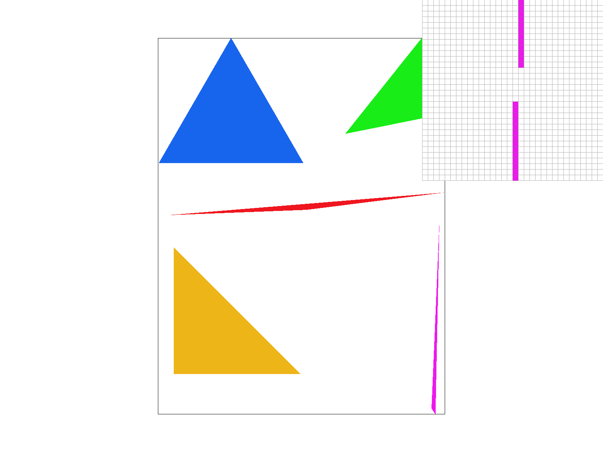

basic/test4.svg using task 1 code |

|
Projects Homepage
In this project we explore 2D rasterization, including rasterizing basic triangles in task 1, adding supersampling antialiasing in task 2, exploring a bit of transformations in task 3, then coming back to implement barycentric coordinates in task 4, and then expanding triangle rasterization to sample textures in task 5, and finally adding mipmap levels on top of that for task 6. Rasterization is the process of taking a mathematical representation of a vector graphic, in our case SVG files, and convert it to discrete pixels in to draw onto our screen or output as a regular PNG image.
The goal of this assignment is gain a better understanding of the various aspects surrounding rasterization through practical implementation. Despite the implementations of each task being very basic concepts in each area of rasterization, I found this project quite challenging because it’s one thing understanding the concept behind a process and another to convert the equations and theory into code. Overall, I felt that I learnt a lot and am happy being able to produce the correct images and have a working rasterizer.
illustration/05_lion.svg drawn using my code |
The goal of my triangle rasterizer is to implement the 3 line test from lecture. We are given 3 sets of (x, y) coordinates for the 3 points and a color. Using these 3 points, I calculated the edges of the triangle, and using the edges, I calculated the normals of each edge. Each line test checks if a given point is on the same side of a normal. It doesn’t matter of the normals are facing inwards or outwards depending on the winding order, because all 3 V.N tests should have the same sign regardless if a point is inside the triangle. Since we should also draw all the triangle edges, we should do V.N <= 0 and V.N >= 0 for our comparisons. If a point passes the test, I simply fill in that pixel with the provided color.
My algorithm is no worse than one that checks each sample within the bounding box of the triangle because I calculated the min and max x and y values for the bounding box of the triangle before I loop through the bounding box, hence I do not unnecessarily go through the entire frame buffer.
The interesting part shown by the pixel inspector is a gap in the magenta triangle, and is likely caused by an antialiasing issue; that part was too thin.
basic/test4.svg using task 1 code |

|
The goal of task 2 is to convert the rasterize_triangle() in task 1 to support different supersampling rates, namely rates of 1 (default no change), 4, and 16. I modified other functions to support this too. My attempt is standard grid sampling. The main idea is to break up each point and consider it as for example 4 different blocks. We then average the color we sampled in each sub-point to determine the overall color for the point/pixel.
The project warned us that points and lines code may be affected by our modifications as well since we need to draw those into the supersample buffer too. I noted that since rasterize_line calls rasterize_point, I only need to consider the latter. I opted for a simple change that fills the entire chunk (determined by sample rate size) with the given color. This is the same technique noted in the project specs: “fill all the supersamples corresponding to the point or line with the same color, so it comes out as a single sampled pixel in the framebuffer.”
I used the given sample_buffer as my supersample buffer since most of the buffer code written utilized it already. I simply resized it depending on the sample rate with the provided set_sample_rate() and set_framebuffer_target(). I left clear_buffers() alone since I didn’t add any new buffers on my own.
The modification to fill_pixel() is very small, as I only needed to change how I index into sample_buffer, but at the same time I didn’t want to modify the originally provided function. Therefore I overloaded fill_pixel() with another one that takes in 4 arguments to allow easy indexing into the sample_buffer with all the expanded supersampling chunks of 4 or 16. Therefore this new function needs to be called in loops with size of sample_rate.
Some of the tough parts I had to deal with was how I could keep track of linear indexing into the sample_buffer vector despite having to deal with grids of 2x2 or 4x4 chunks with nested for loops. I needed to make sure to make even, uniform steps and divisions of the point depending on the sampling rate.
Supersampling is useful because it can help reduce and smooth out antialiased edges.

basic/test4.svg with sampling rate of 1 |
|
|
|
Looking back at the magenta triangle from task 1, we can see that supersampling drastically affects the portion highlighted. Since the tip of the triangle is super thin and is technically less than a pixel wide, without supersampling its less likely a pixel center will be hit when sampling, hence no pixel is rasterized. But with supersampling, lighter blurry pixels are rendered to represent the thinness.
After writing up transforms.cpp, I duplicated and created my_robot.svg and played around with the transforms (just rotation and translation) and color a little. I made a colorful dancing robot friend. One small thing I noted was that if I rotated the upper arm for example, it rotates from the center so the arm looks like it detached, and I would have to translate the arm slightly downwards to reconnect the arm with the torso.
|
|
Task 4 asks us to implement the function RasterizerImp::rasterize_interpolated_color_triangle(), which is really similar to the rasterize_triangle() we implemented earlier, but now we have a a color for each triangle point and we need to interpolate the color between them with barycentric coordinates.
Barycentric coordinates describes a point as a linear combination of the vertices of the triangle, utilizing proportions and the relative position of the point to the vertices. This triangle image (which I found off of Wikipedia) clearly illustrates this concept, where each corner has a color (either red, green, or blue), and inside the triangle the color is smoothly blended together because the color inside is a weighted sum of the three vertices. And as a point in the triangle gets closer to a particular vertex, the color is closer to the original assigned color of that vertex.
The formula is: $$ P = A * \alpha + B * \beta + C * \gamma $$ For the alpha, beta and gamma formulas I used the ones from Lecture 5 Slide 22
|
|

svg/basic/test7.svg output |
Pixel sampling is finding the color of a pixel by mapping it to a texture, and sampling from that texture space using relative coordinates. Nearest neighbor sampling simply takes the color of the texel closest to the (u,v) coordinate we calculate our pixel to be in with barycentric coordinates. Bilinear interpolation sampling linearly interpolates between the 4 closest texels to our sample point, calculating the color based on the weighted sum.
Below we compare nearest and bilinear sampling at 1 sample pixel and 16 samples per pixel. In the 1 pixel per sample examples, we can clearly see that bilinear sampling beats nearest neighbor because it’s much smoother. Bilinear sampling blurs out high frequency details, resulting in less aliasing. The effect is less pronounced at 16 pixels per sample, because supersampling blurs and filters out high frequency already.
|
|
|
|
|

|
Level sampling utilizes mipmaps, which are essentially smaller, lower-resolution, downsampled images of the original texture image. Different texture sizes are used depending in how far away the object is (i.e. how small it is on the screen). This issue is more prominent in 3D rendering where we have many texture objects at various distances. The goal is to avoid aliasing when we do lower-rate sampling on smaller areas.
In rasterizer.cpp, we implement rasterize_textured_triangle(). We compute our supersampled location as usual, then its texture space coordinates with barycentric coordinates. The next primary change is that we have a SampleParam object (provided to us) that stores one of the 3 sampling modes (zero, nearest, linear) as well as the various derivatives we need to calculate the L forumla (slides 65-66 lecture 5). We pass this SampleParam into our texture class by calling texture.sample() which returns our desired color for that point.
In texture.cpp, the get_level() function implements the L formula above to figure out which mipmap level is appropriate. My sample() has a switch statement that reads the SampleParam we passed in to se which of the 3 modes is selected, and also depending on the pixel sampling method, call the appropriate nearest or bilinear sampling function.
We looked at 3 techniques this project: supersampling, pixel sampling, and level sampling. Supersampling at 4x4 is the slowest because we’re sampling 16 times per pixel. For pixel sampling, nearest neighbor is faster than bilinear, because the former simply looks for the closest texel whereas the latter has to weigh 4 nearest ones. However, bilinear is not as slow as supersampling. Level sampling in general is faster than supersampling (unless sample rate is 1 in which case it’s not supersampling). There is some overhead with the mipmapping though.
Looking at memory, it’s clear that supersampling requires the most memory, because if our sample rate is 16 for example, then we would need 16 times the memory compared to using a straightforward sample buffer. In terms of pixel sampling, there should be no difference between nearest neighbor and bilinear filtering, since we’re not storing anything extra chunks of information. For level sampling, compared to level zero (no mipmapping), we would need a 1/3 extra space to store the subsequent mipmaps for nearest and linear level sampling.
In terms of antialiasing, the more the better. So for supersampling, we want higher sampling rate, for pixel sampling, bilinear over nearest, and for level sampling, linear is better than nearest and level zero. Comparing all three techniques, I feel that pixel sampling is the worst, because all bilinear does is make it really blurry all over. Level sampling is a bit better, it’s efficient because we use lower level mipmaps when necessary to prevent aliasing. The best would be supersampling, which preserves the highest amount of original high frequency information. For the naked eye looking at a zoomed out image, I personally feel like doing anything but nearest level/pixel and having sample rate of 1 will look just fine.
|
|
|
|
|
|
If you are not participating in the optional art competition, don't worry about this section!
Link to project webpage